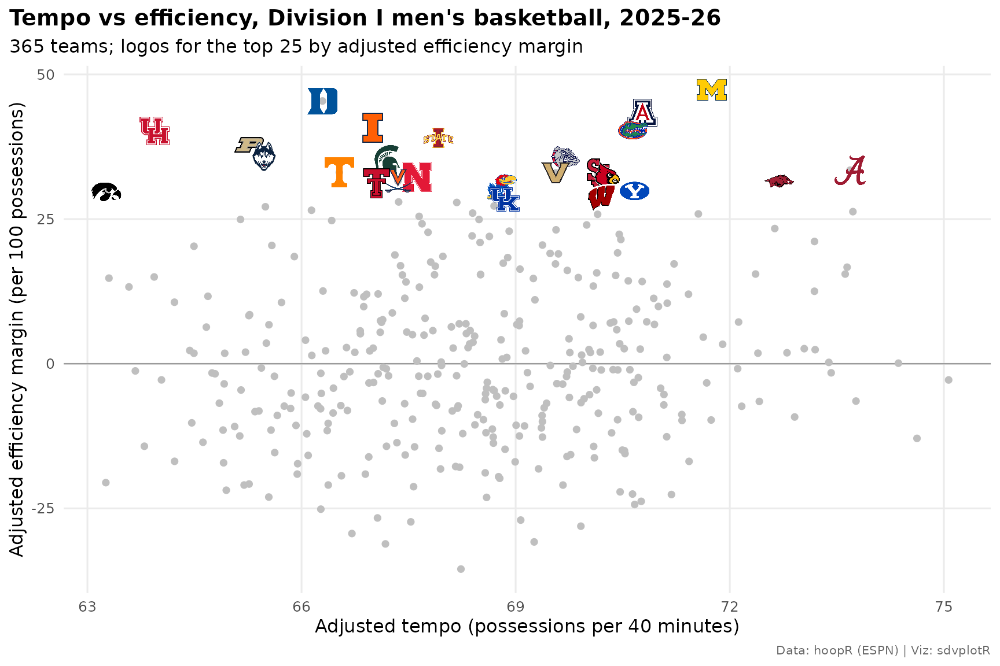
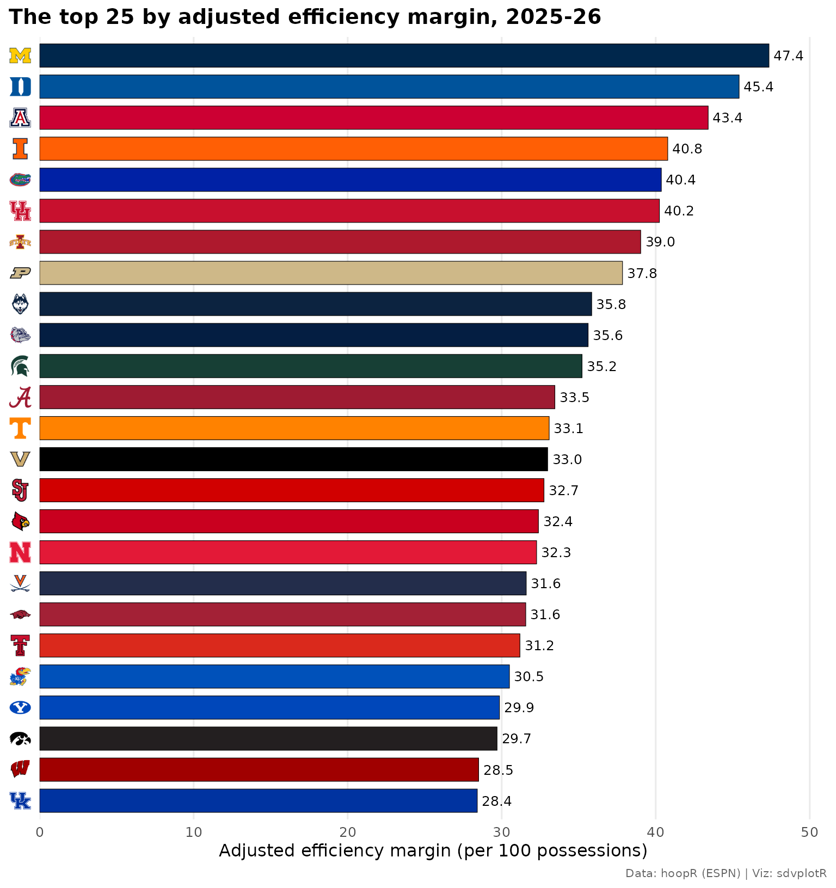
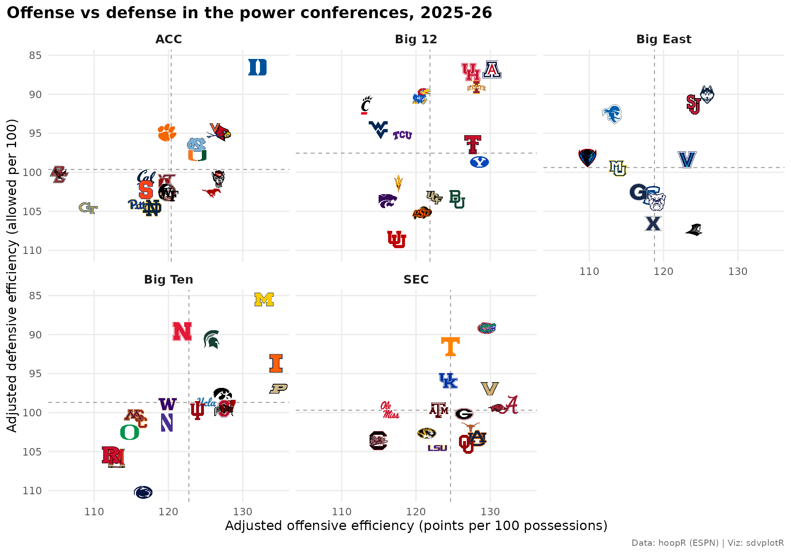
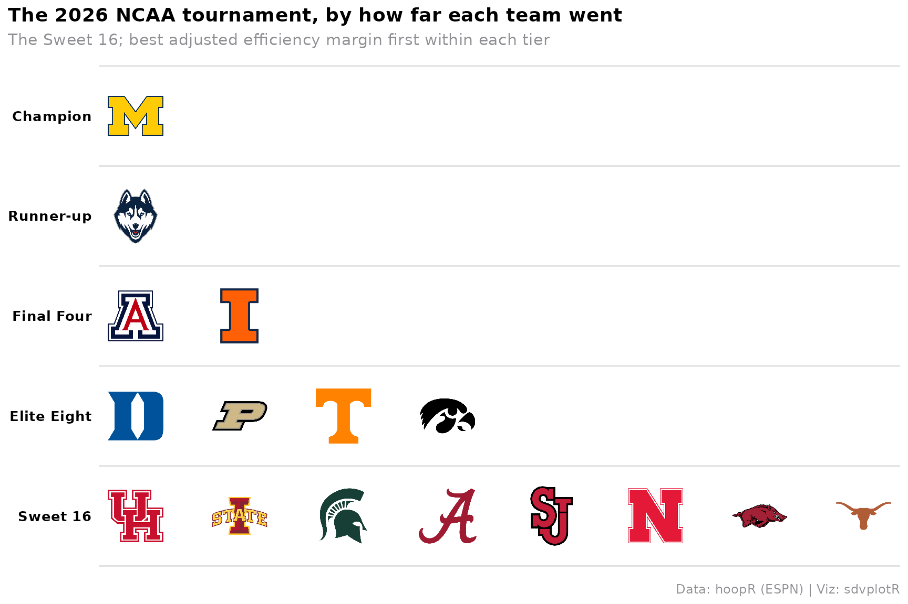
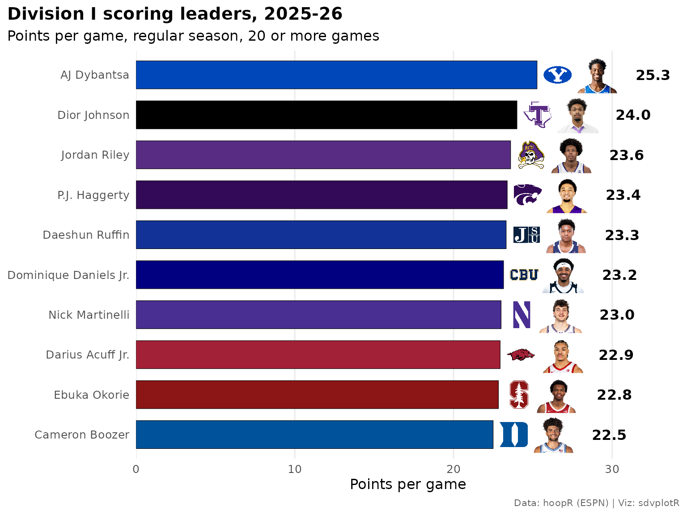
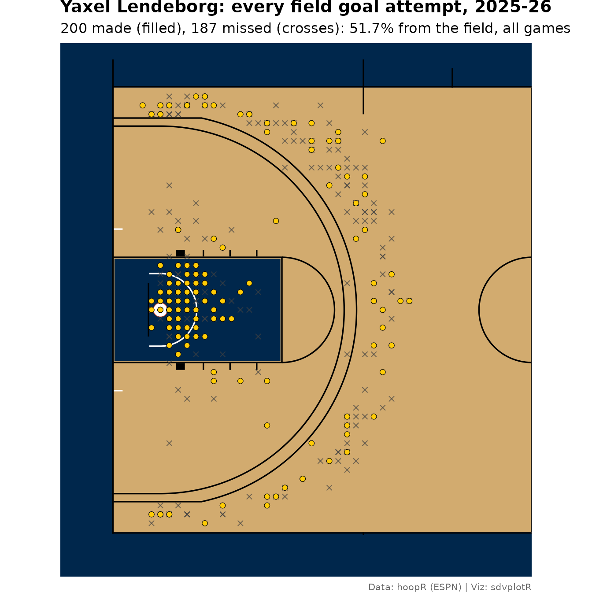
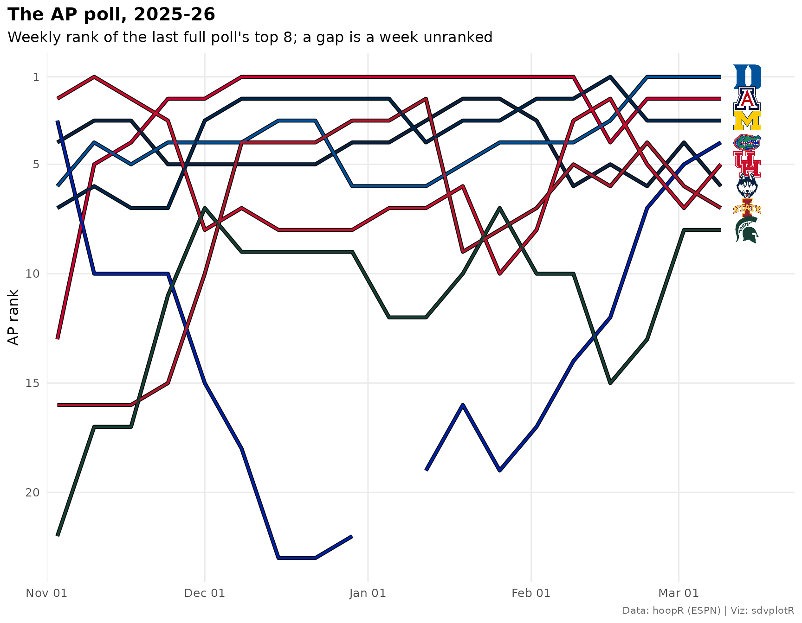

Men's College Basketball Visualizations with hoopR and sdvplotR
Saiem Gilani


Source: vignettes/mbb-viz.Rmd
mbb-viz.RmdOn this page
Division I men’s basketball has more than 360 teams in 31
conferences, and the conferences change from one season to the next.
These ten examples chart the 2025-26 season: matching ESPN team ids and
names to sdvplotR, keeping a 360-team chart legible, ranking the top 25
with logos on the axis, the power conferences in small multiples, a
season-by-season realignment table with conference logos, a conference
standings table, March as a tier list, a headshot leaderboard, a shot
chart on a college court and the AP poll as a bump chart, then the
360-team chart again as an interactive one. The data are hoopR’s ESPN release files
on GitHub (load_mbb_*()): box scores, standings, schedules,
shots and the adjusted team ratings. Nothing here calls
stats.ncaa.org.
Setup
library(sdvplotR)
library(ggplot2)
library(dplyr)
library(tidyr)
library(gt)
season <- 2026 # the 2025-26 season: hoopR names a season by the year it ends
label <- "2025-26"
source_note <- "Data: hoopR (ESPN) | Viz: sdvplotR"
theme_set(
theme_minimal(base_size = 12) +
theme(
plot.title = element_text(face = "bold"),
plot.title.position = "plot",
plot.caption = element_text(color = "grey40", size = 8),
plot.caption.position = "plot",
panel.grid.minor = element_blank()
)
)1. Team ids, names and what doesn’t resolve
sdv_teams("mbb") lists every Division I program sdvplotR
knows, one row per team, with its ESPN team id (team_id).
Full names, short names, ESPN ids and the names other providers use
(NCAA.com, KenPom, Torvik) all resolve to that id:
mbb_teams <- sdv_teams("mbb") |>
mutate(team_id = as.integer(team_id))
nrow(mbb_teams)
#> [1] 366
sdv_resolve(
c("Michigan", "Michigan Wolverines", "Connecticut", "Saint Mary's", "130", "American"),
league = "mbb"
)
#> [1] "130" "130" "41" "2608" "130" "44"Two things in that output matter for real data. "130" is
Michigan’s ESPN id, and "Michigan" and
"Michigan Wolverines" give the same team. And
"American" is American University, a Patriot League team:
the American Conference is "American Conference", a
conference row, listed with
sdv_teams("mbb", include_conferences = TRUE), not a team. A
short form no provider uses does not resolve; sdv_suggest()
proposes candidates, and never picks one for you:
sdv_suggest("St. Marys", "mbb", n = 3)
#> [1] team_id name
#> <0 rows> (or 0-length row.names)hoopR’s adjusted ratings store the ESPN id as text while the box
scores store it as an integer; mbb_teams above holds it as
an integer, so cast the ratings before the join. The ratings also rate
every non-Division I opponent a Division I team played; the inner join
keeps the Division I teams. Each team’s 2025-26 conference comes from
that season’s standings, not from sdv_teams(), whose
conference is today’s (the College Basketball Crown is a
postseason event filed as a group, so it is dropped).
standings <- hoopR::load_mbb_standings(seasons = season)
conferences <- standings |>
filter(group_abbreviation != "CBC") |>
distinct(team_id, conference = group_short_name)
stopifnot(!anyDuplicated(conferences$team_id))
ratings <- hoopR::load_mbb_ratings(seasons = season) |>
mutate(team_id = as.integer(team_id))
nrow(ratings)
#> [1] 727
ratings <- ratings |>
inner_join(select(mbb_teams, team_id, team = abbr, team_name = name), by = "team_id") |>
left_join(conferences, by = "team_id") |>
arrange(desc(adj_em), team)
nrow(ratings)
#> [1] 3652. Tempo against efficiency: 360 teams, 25 logos
With 360 teams, a logo for everyone is a smear. Draw every team as a grey point and give logos only to the top 25 by adjusted efficiency margin (points scored minus allowed per 100 possessions, adjusted for the opponents).
top25 <- head(ratings, 25)
ggplot(ratings, aes(adj_tempo, adj_em)) +
geom_hline(yintercept = 0, color = "grey60", linewidth = 0.4) +
geom_point(color = "grey75", size = 1.6) +
geom_sdv_logos(aes(team = team), data = top25, league = "mbb", width = 0.035) +
labs(
title = paste("Tempo vs efficiency, Division I men's basketball,", label),
subtitle = paste(nrow(ratings), "teams; logos for the top 25 by adjusted efficiency margin"),
x = "Adjusted tempo (possessions per 40 minutes)",
y = "Adjusted efficiency margin (per 100 possessions)",
caption = source_note
)
3. A ranked top 25 with logos on the axis
scale_y_sdv() swaps a discrete axis of abbreviations for
logos, so the bars keep their order and the labels stay short. A thin
black edge keeps pale team colors visible.
top25 |>
mutate(team = factor(team, levels = rev(team))) |>
ggplot(aes(adj_em, team, fill = team)) +
geom_col(width = 0.75, color = "black", linewidth = 0.2) +
geom_text(aes(label = sprintf("%.1f", adj_em)), hjust = -0.15, size = 3.3) +
scale_fill_sdv(league = "mbb") +
scale_y_sdv(league = "mbb", size = 16) +
scale_x_continuous(expand = expansion(mult = c(0, 0.08))) +
labs(
title = paste("The top 25 by adjusted efficiency margin,", label),
x = "Adjusted efficiency margin (per 100 possessions)",
y = NULL,
caption = source_note
) +
theme_y_sdv() +
theme(legend.position = "none", panel.grid.major.y = element_blank())
4. Offense vs defense in the power conferences
A conference is the natural small multiple: its 11 to 18 logos fit in
one panel. geom_sdv_logos() maps the team as an aesthetic,
so it follows facet_wrap(), and
geom_mean_lines() draws each conference’s own averages.
Defense is points allowed, so its axis is reversed to put good defenses
on top.
power <- ratings |>
filter(conference %in% c("ACC", "Big 12", "Big East", "Big Ten", "SEC"))
ggplot(power, aes(adj_o, adj_d)) +
geom_mean_lines(aes(x0 = adj_o, y0 = adj_d), color = "grey60", linewidth = 0.4) +
geom_sdv_logos(aes(team = team), league = "mbb", width = 0.085) +
facet_wrap(~conference, ncol = 3) +
scale_y_reverse() +
labs(
title = paste("Offense vs defense in the power conferences,", label),
x = "Adjusted offensive efficiency (points per 100 possessions)",
y = "Adjusted defensive efficiency (allowed per 100)",
caption = source_note
) +
theme(strip.text = element_text(face = "bold", size = 11))
5. Conference realignment, season by season
A past season’s conference comes from that season’s data. Load three
seasons of standings and follow the twelve teams of the 2023-24 Pac-12:
ten left for the ACC, Big 12 and Big Ten in 2024, and Oregon State and
Washington State spent two seasons in the West Coast Conference. The
last column is sdv_teams()’s conference, today’s, where
those two anchor the rebuilt Pac-12. Conference names give conference
logos, so gt_sdv_logos() draws every column;
include_name = TRUE keeps the name beside the mark.
conf_rows <- sdv_teams("mbb", include_conferences = TRUE) |>
filter(program == "conference")
history <- hoopR::load_mbb_standings(seasons = (season - 2):season) |>
filter(group_abbreviation != "CBC") |>
distinct(season, team_id, conference = group_short_name)
pac12 <- history |>
filter(season == !!season - 2, conference == "Pac-12") |>
pull(team_id)
history |>
filter(team_id %in% pac12) |>
pivot_wider(names_from = season, values_from = conference, names_prefix = "s") |>
inner_join(
select(mbb_teams, team_id, team = abbr, team_name = name, today = conference),
by = "team_id"
) |>
arrange(s2026, team_name) |>
mutate(today = conf_rows$team_id[match(today, conf_rows$name)]) |>
select(team, team_name, s2024, s2025, s2026, today) |>
gt() |>
tab_header(
title = "Where the 2023-24 Pac-12 went",
subtitle = "Each season's conference, from that season's ESPN standings"
) |>
cols_label(
team = "", team_name = "Team", s2024 = "2023-24", s2025 = "2024-25",
s2026 = "2025-26", today = "Today"
) |>
tab_source_note(source_note) |>
gt_sdv_logos(columns = team, league = "mbb", height = 28) |>
gt_sdv_logos(columns = c(s2024, s2025, s2026, today), league = "mbb", height = 22, include_name = TRUE) |>
gt_theme_sdv()| Where the 2023-24 Pac-12 went | |||||
| Each season's conference, from that season's ESPN standings | |||||
| Team | 2023-24 | 2024-25 | 2025-26 | Today | |
|---|---|---|---|---|---|
 |
California Golden Bears |
 Pac-12 Pac-12 |
 ACC ACC |
ACC |
ACC |
 |
Stanford Cardinal |
Pac-12 |
ACC |
ACC |
ACC |
 |
Arizona State Sun Devils |
Pac-12 |
 Big 12 Big 12 |
Big 12 |
Big 12 |
 |
Arizona Wildcats |
Pac-12 |
Big 12 |
Big 12 |
Big 12 |
 |
Colorado Buffaloes |
Pac-12 |
Big 12 |
Big 12 |
Big 12 |
 |
Utah Utes |
Pac-12 |
Big 12 |
Big 12 |
Big 12 |
 |
Oregon Ducks |
Pac-12 |
 Big Ten Big Ten |
Big Ten |
Big Ten |
 |
UCLA Bruins |
Pac-12 |
Big Ten |
Big Ten |
Big Ten |
 |
USC Trojans |
Pac-12 |
Big Ten |
Big Ten |
Big Ten |
 |
Washington Huskies |
Pac-12 |
Big Ten |
Big Ten |
Big Ten |
 |
Oregon State Beavers |
Pac-12 |
 WCC WCC |
WCC |
Pac-12 |
 |
Washington State Cougars |
Pac-12 |
WCC |
WCC |
Pac-12 |
| Data: hoopR (ESPN) | Viz: sdvplotR | |||||
6. A conference standings table
The Big Ten’s 2025-26 standings: the conference and overall records,
home and road, the scoring margin and the adjusted efficiency margin, in
ESPN’s standings order (playoffseed). The standings frame
is long, one row per team and stat, and college standings repeat each
stat for every split (home, road, conference, against ranked teams), so
the unique key is stat_type, not stat_name.
gt_merge_stack_team_color() puts each overall record under
the team name in the team’s color, and gt_color_pills()
colors the rating.
standings |>
filter(group_short_name == "Big Ten") |>
select(team_id, stat_type, display_value) |>
pivot_wider(names_from = stat_type, values_from = display_value) |>
inner_join(select(ratings, team_id, team, team_name, adj_em), by = "team_id") |>
mutate(
seed = as.integer(playoffseed),
logo = team,
margin = as.numeric(avgpointsfor) - as.numeric(avgpointsagainst)
) |>
arrange(seed, team) |>
select(seed, logo, team_name, total, team, vsconf, home, road, margin, adj_em) |>
gt() |>
tab_header(
title = paste("Big Ten standings,", label),
subtitle = "Overall record under each team; conference, home and road records beside it"
) |>
cols_label(
seed = "", logo = "", team_name = "Team", vsconf = "Conf", home = "Home",
road = "Road", margin = "Margin", adj_em = "Adj. EM"
) |>
fmt_number(margin, decimals = 1, force_sign = TRUE) |>
tab_source_note(source_note) |>
gt_merge_stack_team_color(team_name, total, team, league = "mbb") |>
gt_sdv_logos(columns = logo, league = "mbb", height = 28) |>
gt_color_pills(adj_em, digits = 1, domain = c(-10, 50)) |>
gt_theme_athletic() |>
cols_hide(team)| Big Ten standings, 2025-26 | |||||||
| Overall record under each team; conference, home and road records beside it | |||||||
| Team | Conf | Home | Road | Margin | Adj. EM | ||
|---|---|---|---|---|---|---|---|
| 1 |  |
Michigan Wolverines
37-3
|
19-1 | 14-1 | 11-0 | +17.8 | 47.4 |
| 2 |  |
Nebraska Cornhuskers
28-7
|
15-5 | 16-2 | 7-3 | +10.9 | 32.3 |
| 3 |  |
Michigan State Spartans
27-8
|
15-5 | 15-2 | 6-4 | +10.5 | 35.2 |
| 4 |  |
Illinois Fighting Illini
28-9
|
15-5 | 14-3 | 8-2 | +14.4 | 40.8 |
| 5 |  |
Wisconsin Badgers
24-11
|
14-6 | 15-2 | 6-5 | +6.9 | 28.5 |
| 6 |  |
Purdue Boilermakers
30-9
|
13-7 | 12-5 | 8-3 | +11.1 | 37.8 |
| 7 | |
UCLA Bruins
24-12
|
13-7 | 17-1 | 4-6 | +6.0 | 26.5 |
| 8 |  |
Ohio State Buckeyes
21-13
|
12-8 | 14-3 | 5-6 | +6.7 | 28.0 |
| 9 |  |
Iowa Hawkeyes
24-13
|
10-10 | 15-3 | 3-8 | +8.2 | 29.7 |
| 10 |  |
Indiana Hoosiers
18-14
|
9-11 | 14-4 | 3-8 | +6.0 | 24.2 |
| 11 |  |
Minnesota Golden Gophers
15-18
|
8-12 | 13-4 | 2-9 | +0.9 | 15.0 |
| 12 | |
Washington Huskies
16-17
|
7-13 | 10-6 | 4-9 | +3.5 | 21.0 |
| 13 | |
USC Trojans
18-14
|
7-13 | 9-7 | 5-6 | +0.7 | 15.5 |
| 14 |  |
Rutgers Scarlet Knights
14-20
|
6-14 | 10-7 | 2-9 | −4.8 | 6.9 |
| 15 |  |
Northwestern Wildcats
15-19
|
5-15 | 9-8 | 3-8 | +1.1 | 18.5 |
| 16 | |
Oregon Ducks
12-20
|
5-15 | 10-7 | 2-8 | −3.1 | 12.3 |
| 17 |  |
Maryland Terrapins
12-21
|
4-16 | 7-8 | 2-10 | −6.9 | 7.2 |
| 18 |  |
Penn State Nittany Lions
12-20
|
3-17 | 9-8 | 2-9 | −5.6 | 6.4 |
| Data: hoopR (ESPN) | Viz: sdvplotR | |||||||
7. March as a tier list
The schedule’s notes_headline names each NCAA tournament
game’s round, so each team’s last round is how far it went, and the
title game’s winner is the champion. sdv_team_tiers() turns
that into a tier list of the Sweet 16, best adjusted efficiency margin
first within each tier. On its dark background each team draws its
dark-background logo, so Iowa’s black hawkeye is gold.
rounds <- c(
"First Four" = 0, "1st Round" = 1, "2nd Round" = 2, "Sweet 16" = 3,
"Elite 8" = 4, "Final Four" = 5, "National Championship" = 6
)
ncaa <- hoopR::load_mbb_schedule(seasons = season) |>
filter(grepl("^NCAA Men's Basketball Championship", notes_headline)) |>
mutate(round = rounds[sub(".* - ", "", notes_headline)])
stopifnot(!anyNA(ncaa$round))
runs <- bind_rows(
ncaa |> transmute(team_id = home_id, round, won = home_winner),
ncaa |> transmute(team_id = away_id, round, won = away_winner)
) |>
group_by(team_id) |>
summarise(last_round = max(round), champion = any(round == 6 & won)) |>
inner_join(select(ratings, team_id, team, adj_em), by = "team_id")
tiers <- runs |>
filter(last_round >= 3) |>
mutate(tier_no = if_else(champion, 1L, as.integer(8 - last_round))) |>
arrange(tier_no, desc(adj_em)) |>
select(tier_no, team)
sdv_team_tiers(
tiers,
league = "mbb",
title = paste("The", season, "NCAA tournament, by how far each team went"),
subtitle = "The Sweet 16; best adjusted efficiency margin first within each tier",
caption = source_note,
tier_desc = c(
"1" = "Champion", "2" = "Runner-up", "3" = "Final Four",
"4" = "Elite Eight", "5" = "Sweet 16"
),
alpha = 1
)
8. Scoring leaders with headshots
Player box scores carry ESPN athlete ids, which
geom_sdv_headshots() draws for college players too. Only
Division I teams count, and a player’s team is the one he played for
last. Leaders need at least 20 games.
players <- hoopR::load_mbb_player_box(seasons = season) |>
filter(season_type == 2, !did_not_play, team_id %in% mbb_teams$team_id)
scorers <- players |>
arrange(game_date) |>
group_by(athlete_id, athlete_display_name) |>
summarise(games = n(), team_id = last(team_id), ppg = mean(points, na.rm = TRUE), .groups = "drop") |>
filter(games >= 20) |>
arrange(desc(ppg), athlete_id) |>
head(10) |>
inner_join(select(ratings, team_id, team), by = "team_id") |>
mutate(athlete_display_name = factor(athlete_display_name, levels = rev(athlete_display_name)))
ggplot(scorers, aes(ppg, athlete_display_name)) +
geom_col(aes(fill = team), width = 0.7, color = "black", linewidth = 0.2) +
geom_sdv_logos(aes(x = ppg + 1.3, team = team), league = "mbb", height = 0.075) +
geom_sdv_headshots(aes(x = ppg + 3.8, player_id = athlete_id), league = "mbb", height = 0.09) +
geom_text(aes(x = ppg + 6.2, label = sprintf("%.1f", ppg)), fontface = "bold", hjust = 0) +
scale_fill_sdv(league = "mbb") +
scale_x_continuous(limits = c(0, max(scorers$ppg) + 9), expand = expansion(0)) +
labs(
title = paste("Division I scoring leaders,", label),
subtitle = "Points per game, regular season, 20 or more games",
x = "Points per game",
y = NULL,
caption = source_note
) +
theme(legend.position = "none", panel.grid.major.y = element_blank())
9. A shot chart on a college court
load_mbb_shots() holds ESPN’s shot locations, which
hoopR already converts to feet on a center-court frame, the frame
sdv_surface()’s sportyR court uses, so they need no
conversion (sdv_court_coords() is only for the
stats.nba.com legacy frame). Two cleanups first: free throws are placed
at the rim, so drop them, and a shot with no location carries a
placeholder of about ±215 million, so keep only points on the floor.
Then fold the right-basket shots onto the left one. The player is the
national champion’s leading scorer.
champion_id <- filter(runs, champion)$team_id
star <- players |>
filter(team_id == champion_id) |>
group_by(athlete_id, athlete_display_name) |>
summarise(games = n(), points = sum(points, na.rm = TRUE), .groups = "drop") |>
slice_max(points, n = 1, with_ties = FALSE)
star_team <- filter(ratings, team_id == champion_id)$team
shots <- hoopR::load_mbb_shots(seasons = season) |>
filter(
athlete_id_1 == star$athlete_id,
!grepl("FreeThrow", type_text),
abs(coordinate_x) <= 47, abs(coordinate_y) <= 25
) |>
mutate(
right = coordinate_x > 0,
x = if_else(right, -coordinate_x, coordinate_x),
y = if_else(right, -coordinate_y, coordinate_y)
)
sdv_surface("mbb", star_team, display_range = "defense") +
geom_point(
aes(x, y),
data = filter(shots, !scoring_play),
shape = 4, color = "grey25", size = 1.6, alpha = 0.65
) +
geom_point(
aes(x, y),
data = filter(shots, scoring_play),
shape = 21, fill = sdv_team_colors(star_team, league = "mbb", which = "secondary"),
color = "black", stroke = 0.3, size = 2
) +
labs(
title = paste0(star$athlete_display_name, ": every field goal attempt, ", label),
subtitle = sprintf(
"%d made (filled), %d missed (crosses): %.1f%% from the field, all games",
sum(shots$scoring_play), sum(!shots$scoring_play), 100 * mean(shots$scoring_play)
),
caption = source_note
) +
theme(plot.title = element_text(face = "bold"))
10. The AP poll, week by week
Each schedule row carries both teams’ AP rank that week (99 means unranked), so the schedule holds the whole poll. Take each ranked team’s rank per week, keep the top 10 of the last regular-season poll, and draw a bump chart in team colors with the logos at the finish. A week a team spent unranked leaves a gap in its line.
games <- hoopR::load_mbb_schedule(seasons = season) |>
filter(season_type == 2) |>
mutate(week = as.Date(cut(game_date, "week", start.on.monday = TRUE)))
weekly_rank <- bind_rows(
games |> transmute(week, team_id = home_id, rank = home_current_rank),
games |> transmute(week, team_id = away_id, rank = away_current_rank)
) |>
group_by(team_id, week) |>
summarise(rank = min(rank), .groups = "drop")A team that didn’t play in a week (most of them over Christmas) has no row for it, so carry its last rank forward; a team that played unranked keeps its 99 and drops out of the chart until it is ranked again. The final week of conference tournaments has too few ranked teams playing, so the chart ends with the last week in which at least 20 of the 25 played.
full_weeks <- weekly_rank |>
filter(rank <= 25) |>
count(week) |>
filter(n >= 20) |>
pull(week)
final_week <- max(full_weeks)
poll <- weekly_rank |>
complete(team_id, week) |>
arrange(team_id, week) |>
group_by(team_id) |>
fill(rank) |>
ungroup() |>
filter(week <= final_week) |>
mutate(rank = if_else(rank <= 25, rank, NA)) |>
inner_join(select(ratings, team_id, team), by = "team_id")
top_final <- poll |>
filter(week == final_week, !is.na(rank)) |>
arrange(rank, team) |>
head(8)
poll_top <- filter(poll, team_id %in% top_final$team_id)
ggplot(poll_top, aes(week, rank)) +
geom_line(aes(group = team), color = "black", linewidth = 1.5, na.rm = TRUE) +
geom_line(aes(color = team), linewidth = 0.9, na.rm = TRUE) +
geom_sdv_logos(aes(x = week + 5, team = team), data = top_final, league = "mbb", width = 0.04) +
scale_color_sdv(league = "mbb") +
scale_y_reverse(breaks = c(1, 5, 10, 15, 20, 25)) +
scale_x_date(date_labels = "%b %d", expand = expansion(add = c(2, 9))) +
labs(
title = paste("The AP poll,", label),
subtitle = "Weekly rank of the last full poll's top 8; a gap is a week unranked",
x = NULL,
y = "AP rank",
caption = source_note
) +
theme(legend.position = "none")
11. Make it interactive
Section 2 gave logos to 25 teams and left the rest as anonymous grey
points. In an interactive chart every point can name itself: this native
plotly version keeps the grey points as a marker trace with hover text,
and add_sdv_logos() places the top 25’s logos as layout
images. Hover any point or logo for the team, its conference, its tempo
and its adjusted margin, with the offense and defense behind it; drag a
box to zoom into a crowd and double-click to zoom back out.
ratings_hover <- ratings |>
mutate(tip = sprintf(
"<b>%s</b> (%s)<br>Tempo %.1f<br>Margin %+.1f (offense %.1f, defense %.1f)",
team_name, coalesce(conference, "conference unknown"), adj_tempo, adj_em, adj_o, adj_d
))
plotly::plot_ly(
ratings_hover, x = ~adj_tempo, y = ~adj_em, type = "scatter", mode = "markers",
marker = list(color = "grey", size = 7, opacity = 0.6), text = ~tip, hoverinfo = "text"
) |>
plotly::layout(
title = list(text = paste("Tempo vs efficiency, Division I men's basketball,", label), x = 0.02),
xaxis = list(title = "Adjusted tempo (possessions per 40 minutes)"),
yaxis = list(title = "Adjusted efficiency margin (per 100 possessions)")
) |>
add_sdv_logos(top25$adj_tempo, top25$adj_em, top25$team, "mbb", size = 0.05)Only the top 25 get logos, but size is a share of the
whole y-axis, which every team’s margin spans, so the logos stay small
over the crowd of points. plotly loads each logo from its URL, so the
page stays light. Interactive
charts covers plotly, ggiraph and leaflet.
Related SportsDataverse packages
- sdvplot - the Python plotting package
- sdvplot-js - the JavaScript / TypeScript plotting packages
- cfbfastR - college football
- hoopR - men’s basketball
- wehoop - women’s basketball
- baseballr - baseball
- fastRhockey - hockey
- oddsapiR - betting odds
- sportyR - playing surfaces
- sportsdataverse-py - the Python package
- sportsdataverse-R - the R meta-package